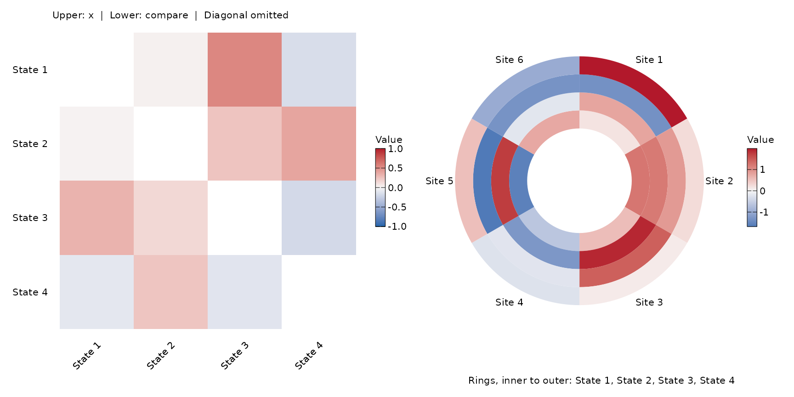
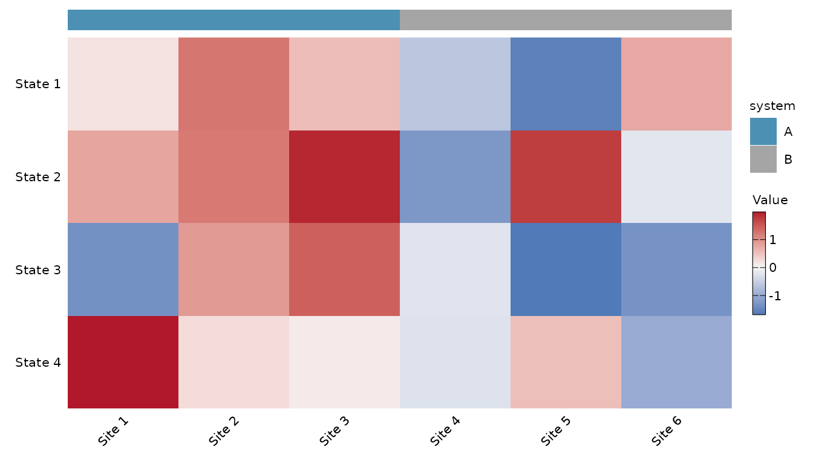
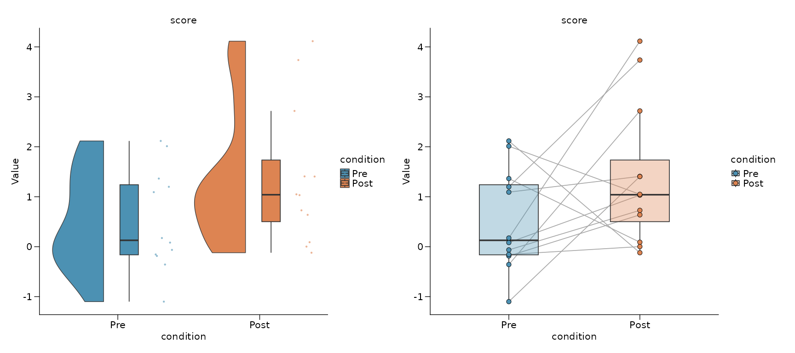
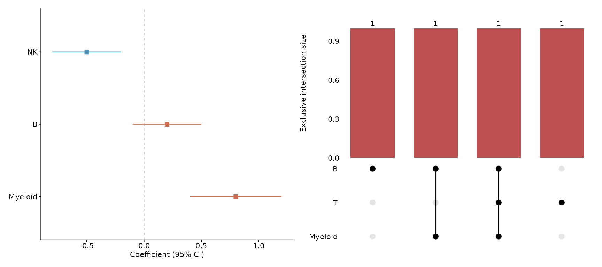
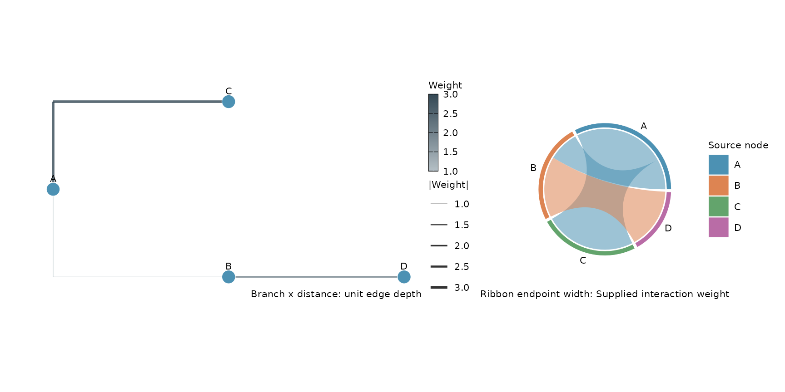
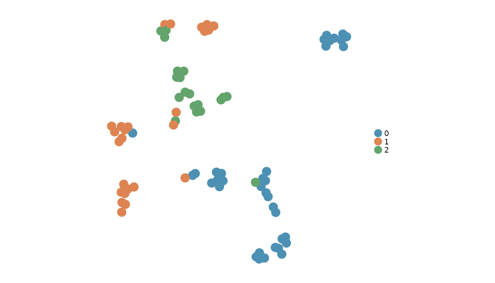
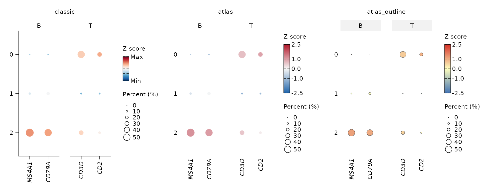
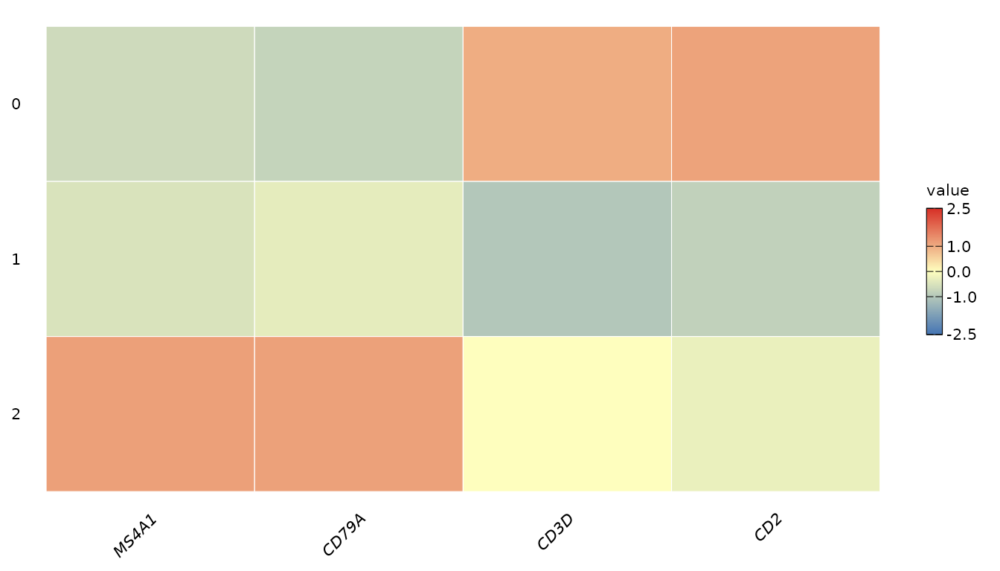
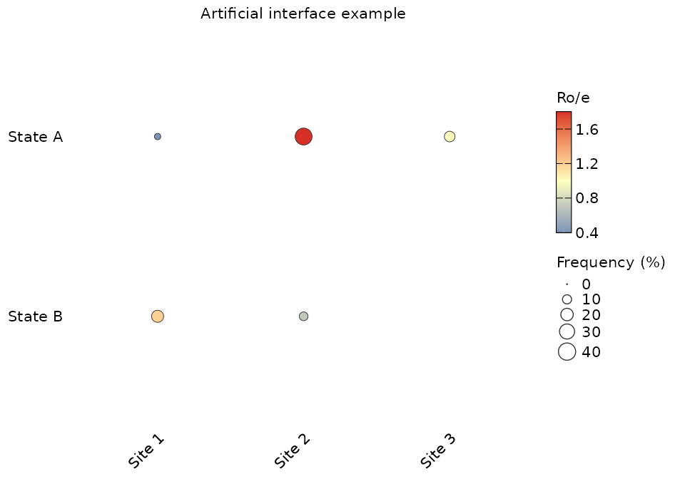
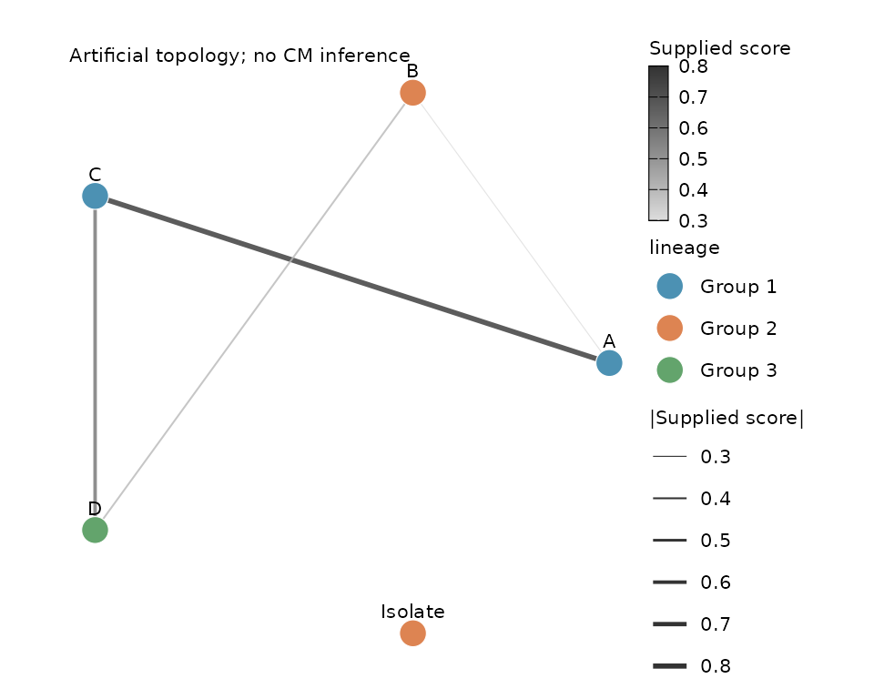

Zhang atlas figures: visual grammar and styles
Source:vignettes/atlas-figure-styles.Rmd
atlas-figure-styles.RmdScope and source verification
The API provides 23 structural styles across
matrices, distributions, effect estimates, set intersections and
networks, alongside three reusable atlas themes. Structural styles
change panel geometry: triangles, rings, annotation tracks, paired
trajectories, split densities, forests, UpSet, clone trees and weighted
chord ribbons. Typography remains 8 pt. They do not reproduce the
papers’ biological results or guarantee identical colors, coordinates,
clustering or panel layout. style = "classic" retains each
function’s original defaults. Explicit palettes and existing embedding
(nebula, glass) and Sankey (A,
B, C) styles remain available.
The six papers below are the source set. Main figures were inspected for NK, B, myeloid, fibroblast and CM. For the Science T-cell paper, figure-caption descriptions were accessible, but the figure images were not independently inspected; its entries are provisional layout classifications. Supplementary and extended-data figures are not an exhaustive part of this inventory. The fibroblast paper is a cross-tissue atlas with cancer analyses. The Nature paper defines cellular modules, which are different from gene modules.
papers <- read.csv(system.file("extdata", "zhang-atlas-papers.csv",
package = "Shennong"))
papers$Article <- sprintf("[%s (%s), %s](https://doi.org/%s)",
papers$authors, papers$year, papers$journal, papers$doi)
knitr::kable(papers[c("paper", "title", "Article", "verification")])| paper | title | Article | verification |
|---|---|---|---|
| NK | A pan-cancer single-cell panorama of human natural killer cells | Tang et al. (2023), Cell | figures_and_captions |
| T | Pan-cancer single-cell landscape of tumor-infiltrating T cells | Zheng et al. (2021), Science | captions_only |
| B | Pan-cancer single-cell dissection reveals phenotypically distinct B cell subtypes | Yang et al. (2024), Cell | figures_and_captions |
| Myeloid | A pan-cancer single-cell transcriptional atlas of tumor infiltrating myeloid cells | Cheng et al. (2021), Cell | figures_and_captions |
| Fibroblast | Cross-tissue human fibroblast atlas reveals myofibroblast subtypes with distinct roles in immune modulation | Gao et al. (2024), Cancer Cell | figures_and_captions |
| CM | Cross-tissue multicellular coordination and its rewiring in cancer | Shi et al. (2025), Nature | figures_and_captions_plus_Fig2c_source_data |
Choose a geometry before choosing a style
| Visual family | Representative panels | Input meaning and Shennong route |
|---|---|---|
| Embedding and feature maps | NK 1C–D, 3C–D; B 5D–G |
sn_plot_dim(), sn_plot_feature() preserve
supplied embedding coordinates; no velocity or new embedding is
inferred. |
| Marker dots | Myeloid 1E; NK 3E; B 5F; fibroblast 3A |
sn_plot_dot(style = "atlas_outline"): color is
expression, size is percent expressing. Named feature lists form marker
blocks. |
| Independent bubble encodings | Fibroblast 1F; NK 6B–C; T 2A |
sn_plot_matrix(type = "bubble", size = ...): supply
Ro/e, interaction potential or effect as color, and frequency,
significance or effect as area. Legend titles must name the actual
quantities. |
| Expression heatmaps | NK 3A–B; B 5I; myeloid 3B |
sn_plot_heatmap() keeps the chosen cell/average mode
and assay/layer. Paper styles use the ggplot renderer. |
| Quantitative matrices | B 4A; CM 2c, 5f; fibroblast 5A |
sn_plot_matrix() preserves supplied Ro/e, correlation,
activity or model coefficients, including NA. Optional blocks and
clustering are explicit. |
| Summary bars | T 1D–E |
sn_plot_barplot(stat = "summary", errorbar = "sd", style = "atlas")
preserves sample means and SD; select SD versus SE explicitly. |
| Sample composition | NK 2B–D; myeloid 3E; B 2A |
sn_plot_sample_boxplot() and
sn_plot_sample_bar() retain sample denominators. Samples,
not cells, are biological replicates. |
| Distributions | NK 3G; B 5H; CM 4e |
sn_plot_distribution(), sn_plot_violin():
distinguish cell-level distributions from sample-aggregated values with
sample_by. |
| Correlations and fitted trends | NK 6I; B 2B; myeloid 7E |
sn_plot_association() retains the chosen correlation
and fit. Style does not change test units or P values. |
| Differential expression and enrichment | NK 4; fibroblast 2E–G, 4A–B |
sn_plot_de(), sn_plot_enrichment() style
existing statistics; significance thresholds remain analysis
choices. |
| Survival and effect intervals | NK 5D–E; fibroblast 4G–H; T 5B |
sn_plot_survival() renders an existing survival result.
A linear coefficient forest (T 4B) must not be interpreted as a Cox HR
forest. |
| Communication and module networks | NK 6; CM 2b, 5i; fibroblast 3I |
sn_plot_communication() styles its native score;
sn_plot_network() renders supplied edges and nodes. The
latter also accepts fixed coordinates for matched network
comparisons. |
| Spatial coordinates and features | Fibroblast 5D–F; CM 3, 4g |
sn_plot_spatial*() uses existing coordinates/sections.
Histology and segmented-cell outlines require their original image
assets. |
| Set, tree and circular layouts | B 2C/3D/4L; CM 4c; fibroblast 6B |
sn_plot_overlap(style="upset"),
sn_plot_network(style="clone_tree"/"chord"),
sn_plot_matrix(style="split_triangle"/"circular"). Supply
sets, topology and scores explicitly. |
Circular phylogenetic dendrograms, Venn diagrams, FACS gates, ATAC
tracks, microscopy and hand-drawn cluster outlines remain outside these
structural styles. Clone trees use supplied rooted topology; they do not
reconstruct BCR lineages. The raincloud layout is an
adaptation of violin/box/sample-dot conventions, not a claim of an
identical source panel.
Structural styles and panel references
layouts <- sn_list_plot_styles()
layouts <- layouts[layouts$kind == "structure" & !duplicated(layouts$style), ]
knitr::kable(layouts[c("function_name", "style", "reference", "data_requirements")])| function_name | style | reference | data_requirements |
|---|---|---|---|
| sn_plot_matrix | upper_triangle | B 2024 Fig. 4L (single half adaptation) | square matrix; identical ordered axis IDs |
| sn_plot_matrix | lower_triangle | B 2024 Fig. 4L (single half adaptation) | square matrix; identical ordered axis IDs |
| sn_plot_matrix | split_triangle | B 2024 Fig. 4L | x and compare; same axes and statistic |
| sn_plot_matrix | circular | CM Nature 2025 Fig. 4C | named numeric matrix |
| sn_plot_matrix | annotated | CM Nature 2025 Fig. 2C and 4I | row_annotation and/or column_annotation |
| sn_plot_matrix | dendrogram | NK 2023 Fig. 3A-B; B 2024 Fig. 4A | finite matrix; Euclidean complete-linkage clustering |
| sn_plot_matrix | grouped_bubble | Fibroblast 2024 Fig. 1F and 3A/D | independent color matrix x and area matrix size; named splits |
| sn_plot_matrix | heatmap_bar | CM Nature 2025 Fig. 5F | named row_summary; statistic explicitly supplied |
| sn_plot_matrix | heatmap_density | Myeloid 2021 Fig. 4B; CM Nature 2025 Fig. 4D | named column_summary; no automatic density inference |
| sn_plot_distribution | violin_box | NK 2023 Fig. 3G; T 2021 Fig. 2F | numeric observations and groups |
| sn_plot_distribution | raincloud | adaptation of atlas violin/box/sample-dot grammar | at least two observations per feature and group |
| sn_plot_distribution | paired_box | Myeloid 2021 Fig. 3E and 6C | pair_by; one complete subject/group/feature observation |
| sn_plot_distribution | paired_slope | Fibroblast 2024 Fig. 6F; CM Nature 2025 Fig. 3G | pair_by; optional sample_by aggregation |
| sn_plot_distribution | split_violin | CM Nature 2025 Fig. 4E | exactly two groups; each feature is a row |
| sn_plot_distribution | stacked_violin | Myeloid 2021 Fig. 5C; Fibroblast 2024 Fig. 1D | multiple features and groups |
| sn_plot_effect | forest | B 2024 Fig. 5A-C; T 2021 Fig. 4B and 5B | label estimate lower upper; identity or positive ratio scale |
| sn_plot_effect | diverging_bar | B 2024 Fig. 3A; CM Nature 2025 Fig. 5J | label and estimate; identity scale |
| sn_plot_effect | lollipop | NK 2023 Fig. 2A | label and estimate; identity or ratio scale |
| sn_plot_overlap | upset | B 2024 Fig. 2C | named sets of unique sample IDs |
| sn_plot_network | bipartite | Fibroblast 2024 Fig. 3I | group_by defines exactly two partitions; cross-partition edges |
| sn_plot_network | clone_tree | B 2024 Fig. 3D | supplied rooted topology; optional branch_length |
| sn_plot_network | chord | Fibroblast 2024 Fig. 6B | non-negative weights; no directed arrows |
| sn_plot_network | rewiring | CM Nature 2025 Fig. 5I | edges and compare_edges; common node table |
Use sn_list_plot_styles("sn_plot_distribution") to
discover styles accepted by one function. These styles are
function-specific: style="upset" belongs to
sn_plot_overlap(), not to an embedding renderer. The
original sn_plot_heatmap(mode="average") accepts matrix
structures and forwards annotation/summary arguments through
...; sn_plot_violin() also accepts
violin_box, raincloud,
split_violin, and stacked_violin. Use
sn_plot_distribution() for tables, explicit assay/layer
choices and sample aggregation. Existing defaults remain unchanged.
The examples below are synthetic layout demonstrations. They are not the paper’s cancer data. The separate Nature workbook recipe uses original values.
set.seed(102)
m <- matrix(rnorm(24), 4, dimnames = list(paste0("State ", 1:4), paste0("Site ", 1:6)))
correlation <- cor(t(m))
p1 <- sn_plot_matrix(correlation, style = "split_triangle",
compare = correlation * 0.6, midpoint = 0, limits = c(-1, 1))
p2 <- sn_plot_matrix(m, style = "circular", midpoint = 0)
patchwork::wrap_plots(p1, p2)
split_triangle keeps x above and
compare below the omitted diagonal. Both axes must have
identical ordered IDs. Independent clustering is rejected.
dendrogram clusters both axes using Euclidean distance and
complete linkage; its new dendrogram is not claimed to match an
unpublished paper tree.
annotation <- data.frame(system = rep(c("A", "B"), each = 3), row.names = colnames(m))
sn_plot_matrix(m, style = "annotated", column_annotation = annotation, midpoint = 0)
For heatmap_bar, supply
row_summary = setNames(values, rownames(m)); for
heatmap_density, supply
column_summary = setNames(values, colnames(m)). These
tracks display your supplied statistic. grouped_bubble
requires an independent non-negative size matrix plus a
named row_split or column_split; area zero
remains invisible.
samples <- data.frame(subject = rep(paste0("P", 1:12), 2),
condition = rep(c("Pre", "Post"), each = 12),
score = c(rnorm(12), rnorm(12, 1)))
a <- sn_plot_distribution(samples, "score", "condition", style = "raincloud")
b <- sn_plot_distribution(samples, "score", "condition", style = "paired_box", pair_by = "subject")
patchwork::wrap_plots(a, b)
Paired plots require one observation per subject/group/feature and
complete pairs across groups. For cell-level tables, aggregate using a
unique specimen sample_by column and identify matched
patients with pair_by. The plot does not pair by row order,
impute missing subjects or calculate a P value.
split_violin draws two horizontal half densities per
feature, each normalized to its own maximum width, with median marks;
width is not relative cell count.
effects <- data.frame(label = c("NK", "B", "Myeloid"),
estimate = c(-0.5, 0.2, 0.8), lower = c(-0.8, -0.1, 0.4), upper = c(-0.2, 0.5, 1.2))
a <- sn_plot_effect(effects, style = "forest", value_label = "Coefficient (95% CI)")
b <- sn_plot_overlap(list(B = c("S1", "S2", "S3"), T = c("S2", "S4"), Myeloid = c("S2", "S3")))
patchwork::wrap_plots(a, b)
For HR/OR forests use scale="ratio" and strictly
positive supplied intervals; the reference becomes one and the axis
logarithmic. identity uses zero. UpSet bars count
exclusive intersections; every ID belongs to exactly
one bar. Empty intersections are omitted; duplicate IDs within a set are
rejected.
links <- data.frame(source = c("A", "A", "B"), target = c("B", "C", "D"), weight = c(1, 3, 2))
a <- sn_plot_network(links, style = "clone_tree")
b <- sn_plot_network(links, style = "chord", weight_label = "Supplied interaction weight")
patchwork::wrap_plots(a, b)
clone_tree requires a connected rooted tree; its default
branch distance is unit edge depth, or the supplied
branch_length column. chord requires
non-negative weights; ribbon endpoints and sector widths encode incident
weight, not node counts. bipartite uses two explicit node
groups. rewiring accepts compare_edges; both
panels share node coordinates and edge scales, retaining absent edges as
absent. None infer biological interactions.
The repository’s scripts/smoke/atlas-figure-layouts.R
exports all 23 styles to PDF/PNG and source-data bundles, with an
independent 408-value Nature readback.
Compare the reusable styles
sn_list_plot_styles()
#> # A tibble: 40 × 7
#> style description reference changes_analysis kind function_name
#> <chr> <chr> <chr> <lgl> <chr> <chr>
#> 1 classic Original funct… NA FALSE theme ggplot rende…
#> 2 atlas Compact atlas … NK Cell … FALSE theme ggplot rende…
#> 3 atlas_outline Outlined bubbl… Myeloid … FALSE theme ggplot rende…
#> 4 atlas_module Module-oriente… Cellular… FALSE theme ggplot rende…
#> 5 upper_triangle upper triangul… B 2024 F… FALSE stru… sn_plot_matr…
#> 6 lower_triangle lower triangul… B 2024 F… FALSE stru… sn_plot_matr…
#> 7 split_triangle two matrices i… B 2024 F… FALSE stru… sn_plot_matr…
#> 8 circular annular heatma… CM Natur… FALSE stru… sn_plot_matr…
#> 9 annotated heatmap with c… CM Natur… FALSE stru… sn_plot_matr…
#> 10 dendrogram heatmap with r… NK 2023 … FALSE stru… sn_plot_matr…
#> # ℹ 30 more rows
#> # ℹ 1 more variable: data_requirements <chr>atlas uses solid marks and clean atlas panels;
atlas_outline uses thin outlined bubbles and open boxplots;
atlas_module uses sequential purple activity maps and grey
network edges. These are shared presets, not claims that every panel in
one paper has the same palette. Signed matrices can use
midpoint = 0; Ro/e matrices can use
midpoint = 1. Supply limits explicitly when
comparing panels on a common scale. No automatic log transform or
significance conversion occurs.
The following is the real 80-cell pbmc_small teaching
dataset distributed with SeuratObject, with its original identities and
t-SNE. It is not data from the six cancer papers and is not a validation
of their cell labels.
pbmc <- SeuratObject::pbmc_small
sn_plot_dim(pbmc, reduction = "tsne", style = "atlas", raster = FALSE)
markers <- list(B = c("MS4A1", "CD79A"), T = c("CD3D", "CD2"))
plots <- lapply(c("classic", "atlas", "atlas_outline"), function(style) {
sn_plot_dot(pbmc, features = markers, style = style) + ggplot2::ggtitle(style)
})
patchwork::wrap_plots(plots, nrow = 1)
sn_plot_heatmap(pbmc, unlist(markers), layer = "data", mode = "average",
style = "atlas_outline")
Atlas dot styles currently reject split_by: Seurat’s
split-dot color encoding differs from a shared quantitative scale. Use
named feature blocks or separate panels with explicitly matched limits.
Heatmap atlas styles currently require backend = "ggplot2";
the other heatmap renderers retain their native controls.
Reproduce Nature Fig. 2c from its source numbers
The publisher provides a source
workbook for Fig. 2. Sheet Fig. 2c, after its first
explanatory row, contains 12 CMs and 34 tissue columns. Some very small
numbers are stored as scientific-notation text;
as.numeric() parses them without adding pseudocounts. The
recipe below preserves all 408 values and their source order. Color is
capped at 3 for display while source values remain intact. The paper’s
dendrogram and exact color lookup are not reconstructed; this is a new
rendering of the supplied numerical matrix, not a modified copy of the
original figure. The original figures are not bundled with Shennong.
d <- readxl::read_excel("41586_2025_9053_MOESM6_ESM.xlsx",
sheet = "Fig. 2c", skip = 1)
roe <- vapply(d[-1], as.numeric, numeric(nrow(d)))
rownames(roe) <- d[[1]]
p <- sn_plot_matrix(roe, style = "atlas_module",
palette = c("#FFFFFF", "#FCAE91", "#CB181D"), limits = c(0, 3),
value_label = "Ro/e", title = "CM tissue prevalence")
stopifnot(identical(attr(p, "shennong_figure_data")$matrix, roe))
sn_export_figure_bundle(p, "cm-fig2c", width = 240, height = 115)Read-only numeric source matrices are retained in the plot’s
shennong_figure_data attribute. Figure bundles write them
as CSV with an explicit .shennong_row column (or a
collision-free variant), together with the PDF/PNG, figure specification
and checksummed manifest. Network bundles include separate original
edge/node tables and rendered coordinates.
The repository script
scripts/smoke/atlas-figure-styles.R downloads this workbook
only when invoked with --download, records its URL and
SHA-256, exports the figure, reads the CSV back and verifies every
value. It also produces a PDF/PNG comparison gallery. Running it without
--download uses the existing local workbook and fails
clearly if it is missing.
Supplied matrix and network examples
The next examples use explicitly artificial numbers to demonstrate the interface; they are not reported biological findings.
score <- matrix(c(0.4, 1.2, 1.8, 0.7, 1, NA), 2,
dimnames = list(c("State A", "State B"), c("Site 1", "Site 2", "Site 3")))
frequency <- score; frequency[] <- c(5, 20, 40, 10, 15, 0)
sn_plot_matrix(score, type = "bubble", size = frequency,
midpoint = 1, style = "atlas_outline",
value_label = "Ro/e", size_label = "Frequency (%)",
title = "Artificial interface example")
edges <- data.frame(source = c("A", "A", "B", "C"),
target = c("B", "C", "D", "D"),
weight = c(0.3, 0.8, 0.4, 0.6))
nodes <- data.frame(node = c("A", "B", "C", "D", "Isolate"),
lineage = c("Group 1", "Group 2", "Group 1", "Group 3", "Group 2"))
sn_plot_network(edges, nodes, group_by = "lineage", style = "atlas_module",
weight_label = "Supplied score",
title = "Artificial topology; no CM inference")
Main-figure inventory
This index classifies 38 main figures. Routes identify useful
renderers; they do not promise every listed subpanel is reproduced by
one function. Existing trajectory/velocity views retain their own
presentation controls. The three CSV catalogs (papers, figures and
layouts) are installed under
system.file("extdata", package = "Shennong"), so the
classifications and verification status remain inspectable.
inventory <- read.csv(system.file("extdata", "zhang-atlas-figures.csv",
package = "Shennong"))
for (paper in papers$paper) {
cat("\n\n### ", paper, "\n\n", sep = "")
rows <- inventory[inventory$paper == paper, -1]
print(knitr::kable(rows))
}NK
| figure | visual_families | shennong_route | boundary |
|---|---|---|---|
| 1 | UMAP; violin; expression heatmap; score bars | sn_plot_dim; sn_plot_distribution; sn_plot_heatmap | Expression and cluster identities supplied |
| 2 | Relative-ratio lollipop; sample boxes; paired comparisons; receptor heatmap | sn_plot_effect(style=lollipop); sn_plot_distribution(style=paired_box); sn_plot_matrix | Supply ratios and explicit subject IDs; no model fitting |
| 3 | Cell heatmap; feature maps; marker dots; FACS; violin; mean-expression matrix | sn_plot_heatmap; sn_plot_feature; sn_plot_dot; sn_plot_matrix | FACS gates require original measurements and a specialist renderer |
| 4 | Velocity; volcano; density; gene trends; sample comparisons; microscopy | sn_plot_de; sn_plot_distribution; existing trajectory and velocity views | Microscopy is an external image asset; velocity is not inferred by style |
| 5 | Signature heatmap; sample boxes; Cox forest; Kaplan-Meier; response boxes | sn_plot_matrix; sn_plot_sample_boxplot; sn_plot_survival | Survival plots require a fitted stored survival result |
| 6 | Interaction-count matrix; LR bubble; marker dots; density; correlation; microscopy | sn_plot_matrix; sn_plot_dot; sn_plot_association; sn_plot_distribution | LR bubble size is significance; marker-dot size is percentage |
| 7 | Biological summary schematic | External illustration | No quantitative renderer |
T
| figure | visual_families | shennong_route | boundary | |
|---|---|---|---|---|
| 8 | 1 | UMAP; frequency summary bars; odds-ratio heatmap; expansion-proliferation scatter | sn_plot_dim; sn_plot_matrix; sn_plot_association | Captions only; frequency bars use mean and SD; odds ratio is not Ro/e |
| 9 | 2 | Effect-size dots; velocity; transition heatmap; feature maps; violin-box; sample boxes; TF bars; ranked scatter | sn_plot_matrix; sn_plot_feature; sn_plot_distribution; existing velocity views | Both dot size and color can encode effect; thresholded transition values must be supplied |
| 10 | 3 | Diffusion and velocity; pseudotime heatmap with density; transition matrix; regulatory network | sn_plot_matrix(style=heatmap_density); sn_plot_network; existing trajectory views | Caption-only classification; pseudotime/density supplied |
| 11 | 4 | Frequency boxes; linear-coefficient forest; Venn | sn_plot_effect(style=forest); sn_plot_sample_boxplot; external Venn renderer | Linear coefficient uses identity/zero; Cox HR uses ratio/one |
| 12 | 5 | Clustered frequency heatmap with side panels; Cox forest; response boxes | sn_plot_matrix; sn_plot_survival; sn_plot_distribution | Joint clustering and multi-panel alignment require explicit assembly |
B
| figure | visual_families | shennong_route | boundary | |
|---|---|---|---|---|
| 13 | 1 | Hierarchical embeddings; signature heatmap; isotype stacks; SHM dots and boxes; spatial-distance area | sn_plot_dim; sn_plot_matrix; sn_plot_composition; sn_plot_distribution | Exact inset hierarchy and distance-area composition require assembly |
| 14 | 2 | Sample boxes; correlation; UpSet; dendrogram with composition | sn_plot_overlap(style=upset); sn_plot_sample_boxplot; sn_plot_association; sn_plot_composition | UpSet implemented; dendrogram-plus-composition composite still requires assembly |
| 15 | 3 | Diverging pathway bars; correlation; sample boxes; clone tree; heatmap | sn_plot_effect(style=diverging_bar); sn_plot_network(style=clone_tree); sn_plot_association; sn_plot_matrix | Clone-tree topology and branch lengths supplied; no BCR inference |
| 16 | 4 | Annotated Ro/e matrix; clone stacks; boxes; correlation; pies; switching triangle; histology | sn_plot_matrix(style=annotated/split_triangle); sn_plot_composition; sn_plot_distribution; sn_plot_association | x upper and compare lower with identical axes; histology external |
| 17 | 5 | Forest plots; UMAP; grouped marker dots; feature maps; violin; cell heatmap | sn_plot_effect(style=forest); sn_plot_survival; sn_plot_dim; sn_plot_dot; sn_plot_feature; sn_plot_violin; sn_plot_heatmap | Generic supplied intervals supported; statistic and scale must be explicit |
| 18 | 6 | Box; ATAC tracks; heatmap; enrichment; ranked regulons; bars; FACS; velocity; trends | sn_plot_distribution; sn_plot_matrix; sn_plot_enrichment; existing velocity and trend views | ATAC tracks and FACS need modality-specific inputs/renderers |
| 19 | 7 | Microscopy; distance violin; heatmap; LR bubble; expression dot; sample comparisons | sn_plot_distribution; sn_plot_matrix; sn_plot_dot; sn_plot_sample_boxplot | Spatial distances and interaction scores must be computed before plotting |
Myeloid
| figure | visual_families | shennong_route | boundary | |
|---|---|---|---|---|
| 20 | 1 | Cohort bars; UMAP; feature maps; outlined grouped marker dots; presence matrix | sn_plot_composition; sn_plot_dim; sn_plot_feature; sn_plot_dot; sn_plot_matrix | Presence matrix is not abundance |
| 21 | 2 | Circular dendrogram; sample boxes; volcano; microscopy; log-ratio bars; KM; LR matrix; correlation | sn_plot_distribution; sn_plot_de; sn_plot_survival; sn_plot_matrix; sn_plot_association | Circular dendrogram needs a specialist renderer and tree |
| 22 | 3 | Dendrogram; cell heatmap; microscopy; boxes; paired comparisons; volcano; signed heatmap | sn_plot_heatmap; sn_plot_distribution; sn_plot_de; sn_plot_matrix | Pair identifiers and signed statistic definitions must be retained |
| 23 | 4 | Trajectory; pseudotime heatmap and density; boxes; volcano; TF and ligand-target matrices | sn_plot_distribution; sn_plot_de; sn_plot_matrix; existing trajectory views | Pseudotime and regulatory scores are upstream results |
| 24 | 5 | Boxes; UMAP with outline; stacked violin; Ro/e; TF matrix; pie | sn_plot_distribution; sn_plot_dim; sn_plot_violin; sn_plot_matrix; sn_plot_composition | Hand-drawn cluster contours are not generated by style |
| 25 | 6 | Circular dendrogram; Ro/e; paired boxes; microscopy; functional matrix; KM | sn_plot_matrix; sn_plot_distribution; sn_plot_survival | Original sample pairing required for paired analysis |
| 26 | 7 | Coefficient heatmaps; sample boxes; correlation with fitted trend | sn_plot_matrix; sn_plot_distribution; sn_plot_association | Preserve model coefficients and sample-level units |
Fibroblast
| figure | visual_families | shennong_route | boundary | |
|---|---|---|---|---|
| 27 | 1 | UMAP outline; stacked violin; cell heatmap; frequency-Ro/e bubbles; phenotype matrix | sn_plot_dim; sn_plot_violin; sn_plot_heatmap; sn_plot_matrix | Bubble color is Ro/e and area is frequency; no automatic cluster hulls |
| 28 | 2 | Sample boxes; composition stacks; average heatmap; volcano; pathway bars; schematic | sn_plot_distribution; sn_plot_composition; sn_plot_heatmap; sn_plot_de; sn_plot_enrichment | Schematic is a separate illustration |
| 29 | 3 | Grouped dots; velocity; microscopy; pathway-effect bubbles; forest; horizontal boxes; TF matrix; bipartite GRN; LR heatmap | sn_plot_dot; sn_plot_matrix(style=grouped_bubble); sn_plot_effect; sn_plot_distribution; sn_plot_network(style=bipartite) | Two node partitions required; weights and forest intervals supplied |
| 30 | 4 | Volcano; enrichment; boxes; microscopy; clustered composition and matrix; KM; forest | sn_plot_de; sn_plot_enrichment; sn_plot_distribution; sn_plot_matrix; sn_plot_survival | Shared clustering/order must be supplied for composite panels |
| 31 | 5 | Correlation matrix with module blocks; dots; spatial features and density | sn_plot_matrix; sn_plot_dot; sn_plot_spatial_feature | Module boundaries and spatial coordinates are input data |
| 32 | 6 | Microscopy; LR chord; spatial maps; boxes; paired slopes | sn_plot_network(style=chord); sn_plot_spatial; sn_plot_distribution(style=paired_slope) | Weighted ribbon geometry and subject pairing implemented; microscopy external |
| 33 | 7 | Biological summary schematic | External illustration | No quantitative renderer |
CM
| figure | visual_families | shennong_route | boundary | |
|---|---|---|---|---|
| 34 | 1 | UMAP; horizontal stacks; circular dendrogram; tissue Ro/e; spatial grids | sn_plot_dim; sn_plot_composition; sn_plot_matrix; sn_plot_spatial | Tree and spatial composition panels require explicit upstream inputs |
| 35 | 2 | Circular module networks; clustered tissue Ro/e; descriptive table | sn_plot_network; sn_plot_matrix | Fig 2c source matrix verified: 12 modules by 34 tissues; no CoVarNet inference |
| 36 | 3 | Spatial grids; Xenium; boxes; paired slopes; heatmap; dots; spatial gene maps | sn_plot_spatial; sn_plot_distribution; sn_plot_matrix; sn_plot_dot; sn_plot_spatial_feature | Histology and segmented Xenium cells are not recreated by point maps |
| 37 | 4 | Boxes; activity matrices; circular regulon heatmap; split violin; spatial maps; PHATE; trend | sn_plot_matrix(style=circular/annotated); sn_plot_distribution(style=split_violin); sn_plot_spatial; sn_plot_dim; sn_plot_association | Ring and split density layouts implemented; PHATE/regulon values supplied |
| 38 | 5 | Dots; activity matrices; boxes; co-occurrence heatmap; paired network rewiring; signed bars | sn_plot_matrix(style=heatmap_bar); sn_plot_network(style=rewiring); sn_plot_effect(style=diverging_bar); sn_plot_dot; sn_plot_distribution | Both networks share node coordinates and scales; row summaries supplied |